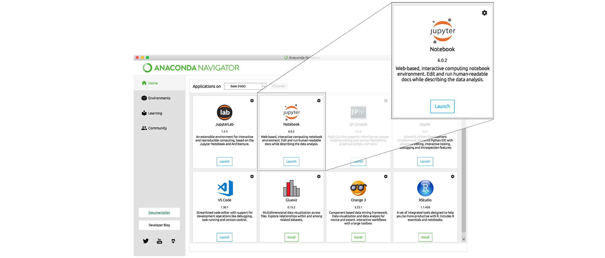

Summary and Setup
The goal of this lesson is to provide an introduction to the core concepts involved in working with magnetic resonance imaging (MRI) data. It is intended for learners with no prior experience.
The lesson will introduce different types of MRI modalities and how they can be easily organized and shared. This lesson is also a pre-requisite for the Structural, Functional and Diffusion MRI Data Analysis lessons, which go more in-depth into their respective MRI modalities.
Over the past decade, the neuroimaging field has produced (and continues to produce) incredible amounts of data. As a result, the scientific community has developed a diverse set of tools to facilitate the access, analysis and visualization of this data. This lesson will start you on a path towards using these tools effectively in your own work.
Getting Started
To get started, follow the directions on the [Setup][lesson-setup] page to install the necessary software packages and download the data.
Overview
This lesson is designed to be run on either a personal computer or in a web-based interactive computational environment using Binder.
Binder
The Binder webpage for this lesson can be accessed by clicking the button below.

Binder enables you to run the collection of Python notebooks found in
the code folder. All of the software and data used in the
lesson are pre-installed in a custom computational environment and no
additional software needs to be installed locally.
Binder Tips
If using Binder, please be aware that startup can take anywhere from 30 seconds to 10 minutes, depending on your internet connection and how recent the custom environment was used. Also, files can be uploaded to the Binder environment. However, the state of the environment is not permanent. If you are inactive for 10 minutes, the environment will shut down and all data will be lost. You should save any changed files to their computers in order to preserve them.
Local
Install Python
In this lesson, we will be using Python 3 with some of its most popular scientific and neuroimaging libraries. Although one can install a plain-vanilla Python and all required libraries by hand, we recommend installing Anaconda, a Python distribution that comes with everything we need for the lesson. Detailed installation instructions for various operating systems can be found on The Carpentries template website for workshops and in the Anaconda documentation.
Install Python Packages
Pip is the most common package installer for Python. This lesson requires a few additional neuroimaging-specific Python packages that can be installed with:
Install dcm2niix
We will be using the dcm2niix software package for
converting neuroimaging data from the DICOM format that is exported from
the MRI scanner to the NIfTI format, which is much easier to work with.
Detailed installation instructions for various operating systems can be
found on the dcm2niix
README. If using the Anaconda Python distribution described earlier,
dcm2niix can be installed by running:
Install DataLad
In order to obtain some of the data that will be used in this lesson, we will be using DataLad, a tool for managing and version controlling large datasets. Detailed installation instructions for various operating systems can be found in the [Datalad Handbook] datalad-install. Again, if using Anaconda, DataLad can be easily installed by running:
Obtain lesson materials
Once DataLad has been installed, create a new folder on your Desktop and download the ds000030 dataset found on OpenNeuro.
Launch Python interface
To start working with Python, we need to launch a program that will interpret and execute our Python commands. Below we list several options. If you don’t have a preference, proceed with the top option in the list that is available on your machine. Otherwise, you may use any interface you like.
Option A: Jupyter Notebook
A Jupyter Notebook provides a browser-based interface for working with Python. If you installed Anaconda, you can launch a notebook in two ways:
Launch Anaconda Navigator. It might ask you if you’d like to send anonymized usage information to Anaconda developers:
 Make your choice and click “Ok,
and don’t show again” button.
Make your choice and click “Ok,
and don’t show again” button.Find the “Notebook” tab and click on the “Launch” button:  Anaconda will open a new browser window or tab with a Notebook Dashboard showing you the contents of your Home (or User) folder.
Navigate to the
datadirectory by clicking on the directory names leading to it:Desktop,dc-mri, thendata:
Launch the notebook by clicking on the “New” button and then selecting “Python 3”:

1. Navigate to the data directory:
If you’re using a Unix shell application, such as Terminal app in macOS, Console or Terminal in Linux, or Git Bash on Windows, execute the following command:
2. Start Jupyter server
3. Launch the notebook by clicking on the “New” button on the right
and selecting “Python 3” from the drop-down menu: 
Option B: IPython interpreter
IPython is an alternative solution situated somewhere in between the plain-vanilla Python interpreter and Jupyter Notebook. It provides an interactive command-line based interpreter with various convenience features and commands. You should have IPython on your system if you installed Anaconda.
To start using IPython, execute:
Option C: plain-vanilla Python interpreter
To launch a plain-vanilla Python interpreter, execute:
If you are using Git Bash on
Windows, you have to call Python via
winpty: